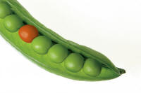

Types of words
There are two types of words in English.
- Content words
When they are alone, these words still have a meaning. For example:
house, school, beauty, dislike, begin, jump, happy, sad, important, quickly, now, fortunately - Grammar or function words
These words mean nothing when they are alone but they make the grammar of the language work. For example:
in, out, up, the, a, an, this, that, he, she, them, and, when, but
 |
Content words |
There are 4 types of content words in English.
- NOUNS
Nouns are words for things, places, people and feelings.
There are 3 main types. Here are some examples:

things: lots of boxes places: Venice in Italy 

people: Abraham Lincoln feelings: happiness - Proper nouns are for people and places:
George is in London
Russia is very large
There are lots of countries in The European Union - Mass nouns are for things which do not have a plural:
milk is expensive here
sugar is bad for me
the water is very cold
happiness is important - Count nouns refer to things we can have in the plural
and most nouns are in this group:
I have a pencil and two pens
my house is here
dogs are not usually dangerous
I love trees
my country is beautiful
he's a teacher
- Proper nouns are for people and places:
You can find out more about nouns in the section on Names for things.
- VERBS
Verbs are words for doing, thinking and being. There are 5 types of verbs.
Here are some examples of the five main types of verbs:

doing: play golf thinking: know the answer 
being: he was the President primary auxiliary: she has broken the jug 
modal auxiliary: we can meet in the café - Verbs describing actions, behaviour or feelings:
kick the ball
don't worry
the glass broke
I am watching TV - Verbs describing states and thinking:
I enjoy walking
I hope she is here
she hates pasta
it helps me work - Linking verbs join nouns to nouns and nouns to
adjectives and show the
connection between things:
I am in London
she became the manager
the car looks wonderful
she got older
there is a house on the corner - Auxiliary or helping verbs make tenses with other verbs:
I have broken the jug
she is working in Berlin
they got the car repaired
we don't visit museums - Modal auxiliary verbs show how you feel about other verbs.
They do not stand alone but are always with other verbs:
we can meet in the café
she will go later
they must go
we used to work harder
- Verbs describing actions, behaviour or feelings:
You can find out more about verbs in the section on Doing and Being words
- ADJECTIVES
Adjectives change nouns. We can say a house and we can say a big house.
Adjectives can come before or after the noun they describe. For example: one red pea - It's a large house with a long garden (adjective before the noun)
- The house is nice but the garden is very small (adjective after the noun, joined with a linking verb)
- ADVERBS
Adverbs change verbs. We can say she talked and we can say she talked slowly.
Adverbs describe verbs (and can describe adjectives and other adverbs as well).
moving quickly
There are five types which answer different questions:- How?
Adverbs of manner:
He drove quickly
He walked slowly
She spoke happily - When?
Adverbs of time:
I'll arrive soon
She left early
I'm flying tomorrow - Where?
Adverbs of place:
Sit here
Please smoke outside
Come in - How often?
Adverbs of frequency:
She often works at home
They never take a holiday
We sometimes play cards - How much?
Adverbs of degree:
I like it a lot
They really enjoy their food
He drove very quickly
She mostly enjoyed the play
- How?
In e. we have an example of the use of the adverb very
which is unusual because it cannot directly modify a verb. It
modifies adjectives and adverbs only.
You can find out more about adjectives and adverbs in the section
on
Describing words.
Here is the big picture:

Take a test to see if you have understood content words.
 |
Grammar or Function words |
These words mean nothing when they are alone. They must be part of a sentence for you to understand them. There are 4 different types of function words.
- DETERMINERS
These words change how we see a noun. For example, we can have:
she has one cat, this cat is pretty, my cat is not very clever, some cats are in the garden, the cat wants food, a cat came into the house, which cat is your cat?
and the determiners change how we understand the words cat, garden and house.
Determiners always come in front of the noun and there are 5 types:
Here are some examples of the 5 types:


the cat is sleeping that cat in the tree whose cat is that? 

his cat two big cats
- a, an, the
These are articles and they tell you if you are talking about a special noun or not. For example:
a cat came in (this is one cat that I don't know)
the cat came in (this is a cat I know) - this, that, these, those
These are demonstratives and they tell me where the cat is. For example:
This cat here
Those cats there
That cat in the garden
These cats in the garden - wh-words
These words make questions:
Which cat?
What cats?
Whose cat?
Who is that? - my, your, his, her, our,
their
These are possessives and show us who has something. For example:
my cat is in the house
his cat is stupid
their cats are in the garden - some, many, a few, two,
three, ten, a little, lots of, no, several
These are quantifiers and tell us how much or how many. For example:
There are four cats in the house
Several cats came in
Many cats are white
No cats are in the garden
- a, an, the
- PRONOUNS
These are small words which stand for things or people. There are two types:
Here are some examples:
Personal: she is playing golf Other: nobody is in the restaurant - I, me, you, she, he, it, her,
him, we, us, they, them
These are personal pronouns because they stand for people or things. The pronoun it stands for one thing only and the pronoun they stands for more than one thing or more than one person.
For example:
I want a cat
She wants it
We gave them a cat
Please tell us - something, someone, anything,
anyone, some, any, nothing etc.
These do not stand for a special person or thing. For example:
Do you want something?
I have nothing to eat
Can I give you some?
Is anyone at home?
- I, me, you, she, he, it, her,
him, we, us, they, them
- PREPOSITIONS
These words usually tell us when or where. They join the verb to the noun or pronoun and there are two main types:
Place: in the square Time: at 12:03 - Place
For example:
He is waiting at the bus stop
She is sitting in my chair
They have lunch in the square
The restaurant is in the corner of the square - Time
For example:
He will wait until 6 o'clock
She came on Sunday
They left after the film
The train arrived at the right time
- Place
- CONJUNCTIONS
These words join ideas together. There are three types:
Here are some examples:

Coordinating Subordinating 
Correlating
- Joining (coordinating) two equal ideas
For example:
He went to the market and he bought a new hat
I telephoned but nobody answered - Making one idea depend on another (subordinating)
For example:
I came because he asked me
She will come if she has time - Double (correlating) conjunctions put two ideas together
For example:
Both John and Mary came
Whether he comes or not is important
- Joining (coordinating) two equal ideas
Here is the big picture:

Take a test to see if you have understood function words.
Now, before you go on, take a longer test to make sure you know about types of words.
 |
Study some more wordsNow you can go on to look at each type of word. |
| nouns | types of noun, plurals, count and mass nouns |
| verbs | types of verbs, tenses and aspects |
| adjectives | types of adjective, adjective position and adjective order |
| adverbs | adverbs and verbs, adverbs and adjectives, adverbs and adverbs |
| prepositions | talking about place and time |
| conjunctions | joining ideas together |
| modal auxiliary verbs | like can, will, may, might etc. |